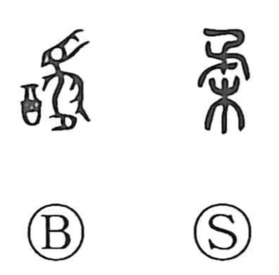

柔

Kun: yawaraka, yawarakai, yawarageru, yawaragu | On: ju, nyu
soft ・ gentle ・ pliant ・ to soften ・ to pacify
Explanation
柔 is a compound graph combining an element written like 矛 above 木. In early bronze texts a related form, 謖—built from 卣, a wine vessel, and the figure of a dancer—depicted offering wine and dancing before the deities, and from that ritual scene took on the sense of appeasing and softening the divine will. Because the on-readings were close, 柔 came to be used for that meaning and the older graph receded. In 柔 itself, the upper element, though shaped like 矛, already suggests a bent bough; together with 木 it evokes a pliant, bending tree. From the idea of soothing the gods grew the senses “to set at ease, to pacify,” and, more broadly, “soft” and “gentle.”